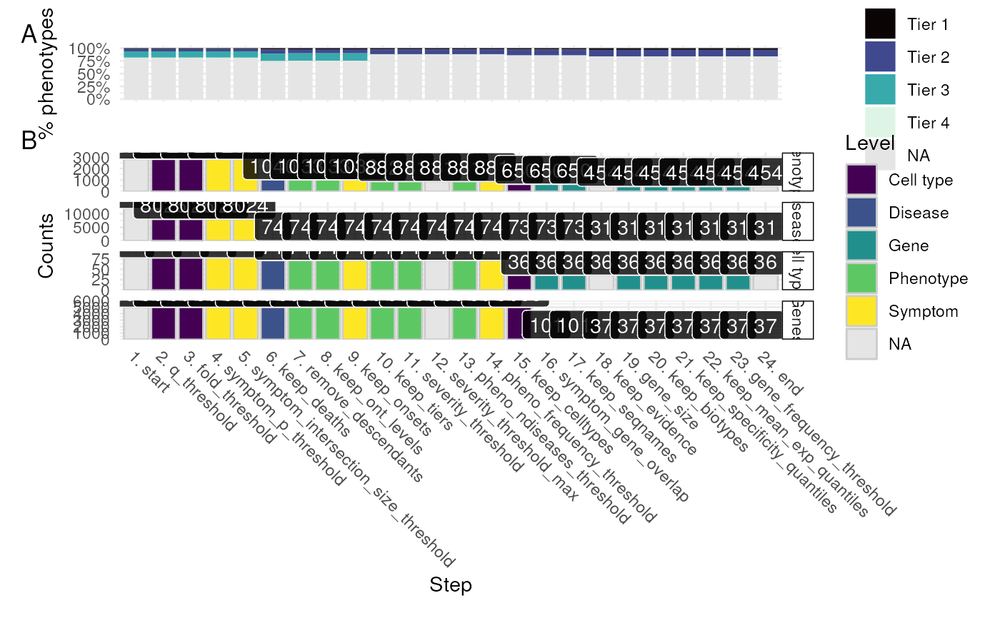

Plot the results of a filtering report generated by prioritise_targets.
report_plot(
rep_dt,
results,
phenotype_to_genes = HPOExplorer::load_phenotype_to_genes(),
annot = HPOExplorer::load_phenotype_to_genes("phenotype.hpoa"),
remove_cols = c("rows", "ids"),
show_plot = TRUE,
save_plot = tempfile(fileext = "_report_plot.pdf"),
verbose = TRUE,
...
)Report table.
The cell type-phenotype enrichment results generated by gen_results and merged together with merge_results.
Output of load_phenotype_to_genes mapping phenotypes to gene annotations.
HPO annotations.
Columns to remove from rep_dt.
Show the plot.
Path to save the plot to.
Print messages.
Arguments passed on to ggplot2::ggsave
filenameFile name to create on disk.
plotPlot to save, defaults to last plot displayed.
deviceDevice to use. Can either be a device function (e.g. png), or one of "eps", "ps", "tex" (pictex), "pdf", "jpeg", "tiff", "png", "bmp", "svg" or "wmf" (windows only).
pathPath of the directory to save plot to: path and filename
are combined to create the fully qualified file name. Defaults to the
working directory.
scaleMultiplicative scaling factor.
width,height,unitsPlot size in units ("in", "cm", "mm", or "px").
If not supplied, uses the size of current graphics device.
dpiPlot resolution. Also accepts a string input: "retina" (320), "print" (300), or "screen" (72). Applies only to raster output types.
limitsizeWhen TRUE (the default), ggsave() will not
save images larger than 50x50 inches, to prevent the common error of
specifying dimensions in pixels.
bgBackground colour. If NULL, uses the plot.background fill value
from the plot theme.
ggplot object
results <- load_example_results()
#> Importing existing file: ... phenotype_to_genes.txt
res <- prioritise_targets(results=results)
#> Prioritising gene targets.
#> Adding term definitions.
#> Adding level-3 ancestor to each HPO ID.
#> Prioritised targets: step='start'
#> - rows: 419,111
#> - phenotypes: 5,443
#> - celltypes: 77
#> Filtering @ q-value <= 0.05
#> Prioritised targets: step='q_threshold'
#> - rows: 7,315
#> - phenotypes: 2,477
#> - celltypes: 77
#> Filtering @ fold-change >= 1
#> Prioritised targets: step='fold_threshold'
#> - rows: 7,315
#> - phenotypes: 2,477
#> - celltypes: 77
#> Getting absolute ontology level for 2,477 HPO IDs.
#> Prioritised targets: step='keep_ont_levels'
#> - rows: 7,315
#> - phenotypes: 2,477
#> - celltypes: 77
#> Annotating phenos with Onset.
#> Importing existing file: ... phenotype.hpoa
#> Importing existing file: ... phenotype.hpoa
#> Prioritised targets: step='keep_onsets'
#> - rows: 7,158
#> - phenotypes: 2,418
#> - celltypes: 77
#> Annotating phenos with Tiers.
#> Prioritised targets: step='keep_tiers'
#> - rows: 689
#> - phenotypes: 124
#> - celltypes: 66
#> Annotating phenos with Modifiers
#> Prioritised targets: step='severity_threshold'
#> - rows: 644
#> - phenotypes: 119
#> - diseases: 16
#> - celltypes: 66
#> Annotating phenotype frequencies.
#> Prioritised targets: step='pheno_frequency_threshold'
#> - rows: 558
#> - phenotypes: 99
#> - diseases: 15
#> - celltypes: 64
#> 33 / 64 of cell types kept.
#> Prioritised targets: step='keep_celltypes'
#> - rows: 352
#> - phenotypes: 86
#> - diseases: 15
#> - celltypes: 33
#> Filtering by gene size.
#> Converting phenos to GRanges.
#> Importing existing file: ... phenotype_to_genes.txt
#> Gathering gene metadata
#> Prioritised targets: step='keep_seqnames'
#> - rows: 57,639
#> - phenotypes: 86
#> - genes: 3,913
#> 234 / 3,913 genes kept.
#> Prioritised targets: step='gene_size'
#> - rows: 2,988
#> - phenotypes: 84
#> - genes: 234
#> Prioritised targets: step='keep_biotypes'
#> - rows: 2,988
#> - phenotypes: 84
#> - genes: 234
#> Filtering by specificity_quantile.
#> Filtering by mean_exp_quantile.
#> Annotating gene frequencies.
#> Importing existing file: ... genes_to_phenotype.txt
#> Prioritised targets: step='gene_frequency_threshold'
#> - rows: 12,054
#> - phenotypes: 83
#> - diseases: 14
#> - celltypes: 32
#> - genes: 233
#> Prioritised targets: step='keep_specificity_quantiles'
#> - rows: 312
#> - phenotypes: 59
#> - diseases: 12
#> - celltypes: 27
#> - genes: 67
#> Prioritised targets: step='keep_mean_exp_quantiles'
#> - rows: 312
#> - phenotypes: 59
#> - diseases: 12
#> - celltypes: 27
#> - genes: 67
#> Sorting rows.
#> Finding top 20 gene targets per: HPO_ID, CellType
#> Prioritised targets: step='top_n'
#> - rows: 312
#> - phenotypes: 59
#> - diseases: 12
#> - celltypes: 27
#> - genes: 67
#> Prioritised targets: step='end'
#> - rows: 312
#> - phenotypes: 59
#> - diseases: 12
#> - celltypes: 27
#> - genes: 67
rep_dt <- res$report
gp <- report_plot(rep_dt=rep_dt, results=results)
#> report_plot:: Preparing data.
#> Importing existing file: ... phenotype.hpoa
#> Importing existing file: ... phenotype_to_genes.txt
#> Loading required namespace: rvest
#> report_plot:: Preparing plot.
#> Saving plot ==> /tmp/RtmpKoejJR/file10cc6636c7d9e_report_plot.pdf
#> Saving 6.67 x 6.67 in image
